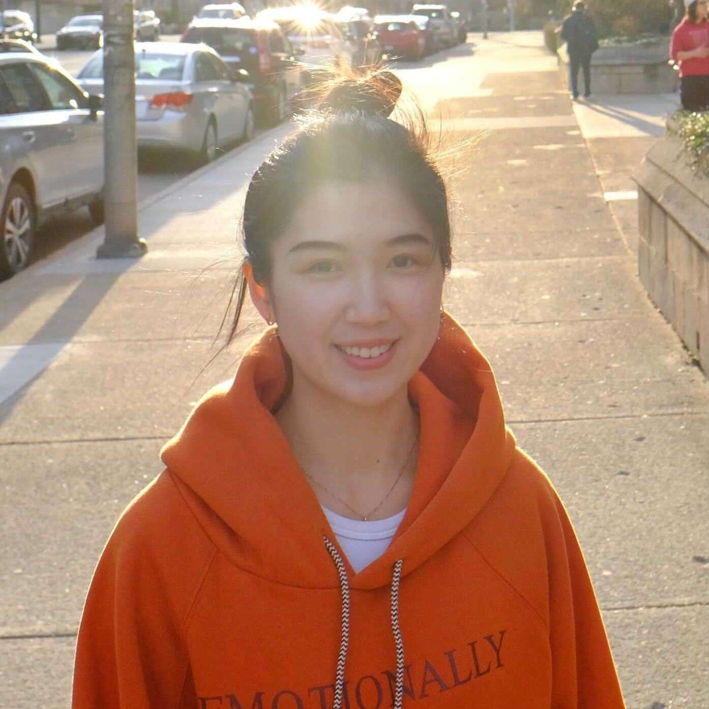

Our People
Project Team Members

- Xiaoling Shi
- Project Director
- Website
Xiaoling Shi received her Ph.D. in Modern Chinese Literature at the University of
Arizona in 2009, her minor being Teaching Chinese as a Second Language. Before coming
to the USA, she worked as a high school Chinese teacher in mainland China for two
years and a secondary school Chinese teacher in Singapore for three years. After
graduation from Tucson, AZ, she was an Assistant Professor in Chinese at Rhodes College,
Memphis, TN for one year. Since 2010, she has been directing the Chinese program at
Allegheny College and restructuring the curriculum. In the summer of 2018 and 2019,
she and her team were granted the Demmler Award for Innovative Teaching from Allegheny
College to revamp the Beginning and Intermediate Chinese Language courses. By using
animations to facilitate language practice and creating online games to motivate students,
she experienced first-hand the power of image, multimedia, and games to create a dynamic
classroom. Identifying the success of the revamped curriculum derived from cultural
content, digital/social media engagement, and communal learning, she led her team to
present it at local, regional, and national conferences from 2018-2019. In 2020, she
continues to guide her team in classrooms to experiment content-based learning by
utilizing online resources, digital project-based learning by employing online engagement
tools/platforms, and collaborative learning by integrating interdisciplinary skills in
language classrooms.
- Kaidi Chen
- University of Connecticut
- Website
Kaidi Chen is currently a Ph.D. candidate (ABD) in Applied Linguistics and Discourse
Studies at the University of Connecticut. He is also a member of the UConn Laboratory
for Spoken Language Processing, a student in the Certificate Program of UConn Cognitive
Science, and affiliated to the Connecticut Institute of Brain and Cognitive Science. He
received his B.A. (with honors) in Chinese Language and Literature in mainland China and
M.A. in Chinese Linguistics in Macau. Before embarking on the Ph.D. program, he had
extensive experiences in teaching Chinese language courses. He taught at Trinity College
in 2018-19 and at Allegheny College from 2016-18. He has also been working for the
prestigious Middlebury Summer Language School for 3 years in a row from 2018 to 2020.
He is interested in bilingualism and second language acquisition, psycholinguistics,
sociolinguistics and language pedagogy. He has a book chapter on Chinese pronunciations
in 2021, and has contributed to the book Teaching Beginning Chinese Grammar: Communicative
Strategies and Activities, published in 2020. He joined the launching of the grant project
in the summer of 2018 and presented it with his colleagues at local, regional and national
conferences. In teaching, his interest lies on how to develop learners’ intercultural
competence/citizenship while cultivating their communicative abilities. He has been
increasingly integrating modern technology and diverse modalities into his classroom to
develop authentic activities and build interactive, social and collaborative learning
environments.
.jpg)
- Chih-Jung Chen
- Rochester Institute of Technology
- Website
Chih-Jung Chen is currently pursuing her Master’s degree in Information Science at Rochester
Institute of Technology, focusing on Human-Computer Interaction and Web Development. She is a
native Taiwanese and can also speak the dialect Taiwanese Hokkien. Prior to embarking on her
career in Information Science, she taught Chinese at Allegheny College first as a teaching
assistant then as an independent instructor, where she actively applied technology such as
gamified activities and content visualization in classrooms. Because of her contributions to
the launching of the grant project in the summer of 2018 and 2019, she was granted travel
awards from Allegheny College to present it with her colleagues at local, regional, and
national conferences. While studying Information Science at Rochester, she has actively
participated in the grant project since May 2020 and strongly advocated for the idea that
technology should be built with accessibility in mind, to accommodate disabled learners, for
instance. Her Master’s capstone project will be about distance learning. With her expertise in
computer science and passion for education, she is dedicated to empowering learners through
technology.

- Runqi Deng
- University of Pittsburgh
Runqi Deng is a teaching assistant at Allegheny College, where she works to explore content-based
learning and project-based learning by utilizing Web 2.0 learning engagement tools/platforms.
She received her master’s degree in foreign language education from the University of Pittsburgh
in 2020. The course work she studies there includes technology in foreign language, psychology of
learning and development for education, sociology of education, etc. Before arriving at Allegheny,
she taught English in K-12 settings in mainland China. She believes that teaching language and
culture should aim to empower learners to become global citizens, in which language proficiency,
critical thinking, and intercultural competence are equally important. Although Deng’s position at
Allegheny is scheduled to end at the completion of the spring 2021 semester, she is committed to
this project and will serve as a consultant.

- Brian Kern
- Allegheny College
- Website
Brian Kern is Associate Director of the Library at Allegheny College. He oversees the Resource
Management Department, which includes digitization, digital asset management, and institutional
repositories. Kern was a member of the team responsible for completing NEH Grant PW-50488-08,
the Ida M. Tarbell Papers Digitization Project, implementing the DSpace institutional repository
platform to organize and display Tarbell’s papers. Prior to Allegheny, Kern was Head of Technical
Services at Muskingum University. He has an M.L.I.S. from the University of Pittsburgh and a B.M.
from Grove City College.
.jpg)
Advisory Board Members
- Shijuan Liu
- Board Chair
Dr. Shijuan Liu received her doctorate in Instructional Systems Technology from the School of
Education, Indiana University at Bloomington. She has been involved with teaching Chinese as a
foreign language since 1995 in China and the United States. Currently, she is an associate
professor of Chinese at Indiana University of Pennsylvania (IUP). Dr. Liu has published widely,
including several peer-reviewed articles and book chapters on online education, such as online
Chinese teaching and learning. She has been also invited to give talks and workshops on technology
integration in language education. She has been serving as an editor for the Journal of Technology
and Chinese Language Teaching since 2010, and has co-edited four proceedings for the biennial
International Conference & Workshops on Technology & Chinese Language Teaching (TCLT) since 2012.
She is on the board of the directors of Chinese Language Teachers Association, U.S.A. 2018-2021,
and on the editorial board of five peer-reviewed journals.
.jpg)
- Cornelius C. Kubler
- Board Co-Chair
Dr. Cornelius C. Kubler is Stanfield Professor of Asian Studies at Williams College, where he
founded and for many years chaired the Department of Asian Studies. Before coming to Williams
in 1991, he served for a total of 11 years as Chinese Language Training Supervisor and Chair of
the Department of Asian & African Languages at the Foreign Service Institute, U.S. Department of
State, as well as Director of the American Institute in Taiwan Chinese Language & Area Studies
School. Kubler, who has directed intensive Chinese language training programs in the U.S., China,
and Taiwan, has been active in teacher training and Chinese language test development and is
author of 32 books and 60 articles on language pedagogy and linguistics.
- Nada Dabbagh
Dr. Nada Dabbagh is Professor and Director of the Division of Learning Technologies in the College
of Education and Human Development at George Mason University in Fairfax, Virginia. She has a
Ph.D. in Instructional Systems Design from The Pennsylvania State University and a Master’s of
Science in Math Methodology and Operations Research from Columbia University. Dr. Dabbagh teaches
graduate courses in instructional design, e-learning pedagogy, and cognition and technology in
the Learning Design and Technology (LDT) master’s program and the Learning Technologies Design
Research (LTDR) doctoral program. Dr. Dabbagh’s research focuses on the pedagogical ecology of
technology mediated learning environments with the goal of understanding the social and cognitive
consequences of learning systems design. Specific research interests include online and blended
learning, digital pedagogy, and personal learning environments (PLEs). Dr. Dabbagh has an extensive
publication record which includes six books and over 100 research papers and book chapters. Her latest
book titled “Meaningful Online Learning” was published in 2019 by Routledge. Dr. Dabbagh has presented
her research at more than 100 scholarly venues participating as keynote and invited speaker at
conferences in Bahrain, Brazil, Oman, Thailand, Iran, and the United States. Dr. Dabbagh has also
facilitated numerous learning technologies’ design and development projects that led to the
award-winning Learning Asset Technology Integration Support Tool and the TechSelect Decision Aide
mobile application.
- Hong Gang Jin
Dr. Hong Gang Jin is the William R. Kenan Professor of Chinese Language and Culture Emeritus at
Hamilton College. She was the Chair Professor of Applied Linguistics at University of Macau for
5 years. With her background in humanities, her small liberal arts teaching experience, and her
training in educational psychology and second language acquisition, Jin conducts research in
areas of cognition and second language learning, second language processing, language curricular
design, and the Chinese language pedagogy & teacher development. She has published 7 books & textbooks
and over 60 book chapters and articles in refereed journals in the US and China.
- Olga Klimova
Dr. Olga Klimova is a Teaching Assistant Professor and a Director of the Russian Program in The Department of Slavic
Languages and Literatures at the University of Pittsburgh. Dr. Klimova holds an M.S.Ed in
Instructional Technology from Duquesne University, an M.A and a Ph.D in Russian Literature and
Culture from the University of Pittsburgh, and an M.A in Popular Culture from Brock University
(Canada). She has been teaching Russian language, literature, and culture courses in Pitt's
Slavic Department since 2005 as a graduate assistant, and, later, as a Lecturer. She has also
taught a variety of language, literature, and culture courses at Carnegie Mellon University,
Brock University, Mercyhurst University, Chatham University, and Washington and Jefferson College.
Dr. Klimova has received extensive training in second language teaching methodologies, educational
technologies, and online teaching at Pitt, Duquesne University, the University of Hawaiʻi, the
University of Minnesota, and the University of Iowa. Since 2012, she has been leading and organizing
various workshops and webinars on language pedagogy and on instructional technology for teaching and
learning. She also has experience working on projects and consulting as an instructional designer
and an online curriculum developer (Pitt, Mercyhurst University, Hampton Middle School, and Hampton
High School). Her professional interests include instructional technology for language teaching,
instructional design, online teaching and learning, curriculum development, proficiency assessment,
and gamification. She is also a program director of The STARTALK Russian Summer School and a regional
chair for The ACTR Olympiada of Spoken Russian at the University of Pittsburgh. She is also a certified
ACTFL OPI tester and WPT tester.
- Haohsiang Liao
Dr. Haohsiang Liao is the Director of Chinese Language Program at Massachusetts Institute of
Technology. Before joining MIT, he taught Chinese at Williams College and Harvard University.
Dr. Liao’s career has focused on language pedagogy and teacher education. He has co-authored
several Chinese language textbooks for learners across various levels and published the book
Easy Mandarin Chinese. He also contributed to the Encyclopedia of Chinese Language and
Linguistics published by Brill with his entry, “Chinese Language Pedagogy at the University
Level in the United States.” Dr. Liao’s areas of expertise are Chinese language pedagogy,
cross-cultural communication and teacher training. In addition, he is passionate about creating
new ways of combining in-house instructions with advancements in digital learning. In August
2020, Dr. Liao launched Chinese Language in Culture: Level 1 on edX, a leading MOOC provider
founded by Harvard University and MIT. As the first Chinese language MOOC offered on the edX
platform by a North American university, this course has attracted over 5,000 students from 133
countries across the globe. Chinese Language in Culture: Level 2 and Level 3 are in the pipeline
to be launched in 2021.
- Manuela Wagner
Dr. Manuela Wagner specializes in the integration of intercultural dialogue and citizenship in
education with the goal of fostering an environment in which students can sustain different
parts of their identities. She is particularly interested in the interplay of theory and practice
and enjoys collaborating with colleagues in K-20. Examples of projects can be found in her
co-authored and co-edited volumes: Teaching Intercultural Citizenship Across the Curriculum: The
Role of Language Education (2019), Teaching Intercultural Competence Across the Age Range: From
Theory to Practice (2018), and Education for Intercultural Citizenship: Principles in Practice
(2017). Other research interests include intellectual humility and conviction, humor in a variety
of contexts (language education, German-speaking cultures), and first language acquisition (pragmatic
development in infants and children and language development in children with Autism Spectrum
Disorder).
- De Bao Xu
De Bao Xu is Leonard C. Ferguson Professor Emeritus in East Asian Languages and
Literatures at Hamilton College, University Distinguished Professor of Chinese (2015-2019), and
Master of Residential College Ma Man Kei Lo Pak Sam (2015-2019) at University of Macau.
Published substantially in Linguistics and Teaching Chinese as a Second Language, he was
editor-in-chief with James Huang of Contemporary Linguistic Theory Series, China Social
Sciences Press, 1st edition, 1997-2000; 2nd edition, 2004-2014; and 3rd edition, 2015-2016;
guest-editor of Journal of Chinese Language Teachers Association, special issue
Technology-based Chinese language teaching and CALL study, Vol. 44:1; editor of Chinese
Phonology in Generative Grammar, Academic Press, New York 2001; and editor and co-editor
of multiple TCLT Conference Proceedings.
De Bao Xu received B.A. in Chinese Language and Literature at Taiyuan Teacher’s College
(1982), M.A. in Classical Chinese at Beijing Normal University (1985), and M.A. and Ph.D. in
Theoretical Linguistics at the University of Illinois at Champaign-Urbana (1988 and 1991).
Joined Hamilton College, he was Assistant Professor, Associate Professor, Full Professor,
Leonard C. Ferguson Professor, and Chair of East Asian Languages and Literatures Dept. from
1991 to 2014.
Initiated TCLT in 2000, he was the Chair of the Standing Committee of TCLT (2000-2020),
editor-in-chief of Journal of Technology and Chinese Language Teaching (2010-2020), and
editor-in-chief of Series of U.S. Technology and Chinese Language Teaching (China Social
Sciences Press, 2012-2016). In recognition of his contribution to technology-based Chinese
teaching and learning, he was awarded the Lifetime Achievement Award of TCLT in 2018.
Conference Presenters
- Yalin Chen
Dr. Yalin Chen is a Senior Lecturer in Chinese at Smith College. She teaches various Chinese
language courses in which she implements student-produced projects to encourage learner
autonomy and authentic learning. Students in her beginning level create short videos introducing
Chinese characters through the Chinese Character Literacy project, and complete the first year
with a video narrative project. In the intermediate level, the video narrative project is
extended to a food-themed digital narrative where students analyze and discuss self-selected
topics on food and its social, historical, and personal significance. In the third year Chinese
course, students choose topics and design Chinese magazines covering social, political,
environmental, and cross-cultural issues. Yalin Chen has also developed flipped classroom
modules with interactive VoiceThread videos to promote student-centered learning and provide
personalized learning experiences in remote teaching settings.
- Xiaofei Tang
Dr. Xiaofei Tang is an adjunct lecturer teaching Chinese language and culture courses in the
Department of Modern Languages at Carnegie Mellon University. Her research interest includes
game-based learning, second language pragmatics, task-based language teaching, and Chinese as
a foreign language. She led a team at Carnegie Mellon University and developed a scenario-based
digital game Questaurant.
- Mario Valdebenito Rodas
Mario Valdebenito is an Instructional Designer at Smith College. Valdebenito attended college
in Chile, where he majored in Digital Arts. During that time, he developed an interest in education
which led him to pursue an M.Ed. in “Learning, Media, and Technology” at UMass Amherst. With
experience in film post-production, motion graphics, and educational technologies, Valdebenito
aims to enhance learning experiences of students through the use of technology. He enjoys
collaborating with subject matter experts of different disciplines in the development and
implementation of technology projects across the curriculum. Some noticeable projects include an
interactive experience with VoiceThread for first-year Chinese students, a public-facing WordPress
site for first- and second-year Chinese courses, and magazine development for third-year Chinese
students using Google Slides.